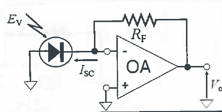
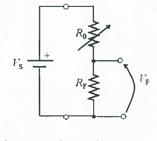

39. Sensorlar (Pt100, NTC, fotodiod) va Measurements imtihon masalalari
1. Sensor nima
Transduser (transducer) = kirish signalini o'zgartirib chiqaradigan har qanday qurilma (kuchaytirgich, filtr, ADC). Sensor = o'lchanayotgan kattalikni birinchi bo'lib "sezadigan" transduser: harorat → qarshilik, yorug'lik → tok va hokazo.
- Passiv sensor: chiqishi qarshilik (yoki sig'im) o'zgarishi. Tashqi manba (VS) kerak. Misol: Pt100, NTC, tenzorezistor.
- Aktiv sensor: o'zi kuchlanish, tok yoki zaryad beradi. Ko'pincha kuchaytirgich kerak. Misol: termojuft, fotodiod.
Kalibrovka funksiyasi (calibration function): chiqishdan kirishni topish formulasi, ya'ni sensor formulasining teskarisi. Masalan R = f(θ) bo'lsa, θ = f−1(R).
2. Rezistiv harorat sensorlari
Pt100 (platina RTD)
Rθ = R0 · (1 + A·θ + B·θ²) Pt100: R0 = 100 Ω (0 °C da), A = 3.9083·10−3 °C−1, B = −5.775·10−7 °C−2Imtihonda soddalashtirilgan chiziqli model ishlatiladi: Rθ = R0·(1 + A·θ). Sensor noaniqligi odatda δθ = a + b·|θ| ko'rinishida beriladi (masalan class A: 0.15 °C + 0.002·|θ|).
- Sezgirlik past: Pt100 da ≈ 0.39 Ω/°C. Shuning uchun simlar qarshiligi xavfli: 0.5 Ω xato ≈ 1.3 °C xato. Yechim: 4 simli ulanish (tok ikki simdan, kuchlanish boshqa ikki simdan o'lchanadi).
- O'z-o'zini qizdirish (self-heating): o'lchash toki IT sensorni isitadi (P = IT²·R). Pt100 uchun IT ≈ 1 mA yaxshi murosa.
- Termoelektrik kuchlanish: juda kichik tokda sezilarli bo'ladi; tok yo'nalishini almashtirib ikki o'lchash o'rtachasi olinadi.
NTC termistor
Yarim o'tkazgich, harorat oshsa qarshiligi kamayadi (Negative Temperature Coefficient). Sezgirlik yuqori (−3…−10 %/°C), lekin juda nochiziqli; diapazon −100…+300 °C. Beta formula: RT = A·eβ/T, ya'ni 1/T = 1/T0 + (1/β)·ln(RT/R0) (T kelvinda). PTC asosan himoya uchun ishlatiladi.
| RTD (Pt100) | NTC | |
|---|---|---|
| Eng kichik noaniqlik | 0.01 °C | 0.1 °C |
| Diapazon | −270…1100 °C | −100…300 °C |
| Vaqt doimiysi | 1…50 s | 0.05…2.5 s |
| Kamchilik | past sezgirlik | katta nochiziqlilik |
Kuchlanish bo'luvchi bilan ulash
Qarshilikni kuchlanishga aylantirishning eng oddiy usuli: sensor Rθ va doimiy RF ketma-ket, VS ga ulanadi, RF dagi kuchlanish o'lchanadi:
VF = VS · RF / (RF + Rθ)VS va RF ning noaniqligi ham natijaga o'tadi (ular "ta'sir qiluvchi kattalik"). Shuning uchun barqaror manba va rezistor kerak.
3. Fotodiod va trans-rezistiv kuchaytirgich
Yoritilganlik (illuminance) Ev, birligi lux (lx = lm/m²): sirtga tushayotgan yorug'lik. Uy chirog'i 30…300 lx, ofis stoli 100…1000 lx, quyosh 105 lx.
Fotodiod yorug'lik tushganda tok beradi (qisqa tutashuv toki):
ISC = S · Ev + IOFF (S = sezgirlik, A/lx; IOFF = qorong'ilikdagi tok)Tokni kuchlanishga aylantirish uchun trans-rezistiv kuchaytirgich (trans-resistance, transimpedance amplifier) ishlatiladi: op-amp, teskari aloqada RF. 19-darsdagi qoidalardan: tok to'liq RF orqali o'tadi:
Vout = RF · ISC
4. Imtihon masalasini yechish retsepti (6 ball)
- Model: sxemadan chiqish formulasini yozing (bo'luvchi yoki Vout = RF·ISC).
- Kalibrovka funksiyasi: uni o'lchanuvchiga nisbatan yeching (θ = …, Ev = …).
- Qiymat: nominal qiymatlarni qo'ying.
- Sezgirliklar: har bir noaniq kattalik bo'yicha |∂/∂x|.
- Absolyut noaniqliklar: foizlarni absolyutga aylantiring (1% · 100 kΩ = 1 kΩ).
- Yig'indi: δ = Σ|c|·δx (+ sensorning o'z noaniqligi, agar berilgan bo'lsa).
- Natija: (qiymat ± noaniqlik) birlik.
5. Imtihon masalasi: 2019-06, A varianti (fotodiod)
"The figure above shows a system for the measurement of the illuminance EV through a photodiode and a trans-resistance amplifier. The photodiode is characterized by the following input/output relationship: ISC = S·EV + IOFF where S = (10 ± 0.1) nA/lux and IOFF = (0 ± 50) nA. The resistor RF has a nominal value of 100 kΩ and a relative tolerance of ±1%. Estimate value and uncertainty of the illuminance EV when Vout = (0.734 ± 0.005) V."
Javob (rasmiy yechim, tushuntirish bilan)
1. Model: Vout = RF·ISC = RF·(S·Ev + IOFF).
2. Kalibrovka: Ev = Vout/(RF·S) − IOFF/S.
3. Qiymat: RF·S = 105 · 10·10−9 = 10−3 V/lux. Ev = 0.734/10−3 − 0 = 734 lux.
4. Sezgirliklar:
- |∂Ev/∂Vout| = 1/(RF·S) = 1000 lux/V
- |∂Ev/∂S| = Vout/(RF·S²) = 0.734/(105·10−16) = 7.34·1010 lux/(A/lux)
- |∂Ev/∂RF| = Vout/(RF²·S) = 0.734/(1010·10−8) = 7.34·10−3 lux/Ω
- |∂Ev/∂IOFF| = 1/S = 108 lux/A
5. Absolyut noaniqliklar: δVout = 0.005 V; δS = 0.1·10−9 A/lux; δRF = 0.01·105 = 1000 Ω; δIOFF = 50·10−9 A.
6. Yig'indi: δEv = 1000·0.005 + 7.34·1010·10−10 + 7.34·10−3·1000 + 108·5·10−8 = 5.00 + 7.34 + 7.34 + 5.00 ≈ 24.7 lux.
Natija: Ev = (734 ± 25) lux.
Tekshiruv usuli:: Vout, S, RF ko'paytma/bo'linmada, nisbiylar: 0.68% + 1% + 1% = 2.68% · 734 = 19.7 lux; IOFF qismi alohida: 5 lux. Jami 24.7 lux. Bir xil!
6. Imtihon masalasi: 2019-06, B varianti (rezistiv harorat sensori)

"The figure above shows a system for the measurement of the temperature θ through a passive resistive sensor that has the following input/output relationship: Rθ = R0·(1 + A·θ) where R0 = 1000 Ω and A = 0.004 (°C)−1. The uncertainty of the sensor is expressed as: δθ = 0.5 °C + 0.003·|θ|. The resistor RF has a nominal value of 1 kΩ and a relative tolerance of ±0.5% and the voltage supply is VS = (5 ± 0.005) V. Estimate value and uncertainty of the temperature θ when VF = (2.750 ± 0.005) V."
Javob (rasmiy yechim, tushuntirish bilan)
1. Model: VF = VS·RF/(RF + Rθ) = VS·RF/(RF + R0 + R0·A·θ).
2. Kalibrovka (θ ga nisbatan yechamiz): RF + R0 + R0Aθ = VS·RF/VF →
θ = (1/A) · ( RF·VS/(R0·VF) − RF/R0 − 1 )3. Qiymat: RF·VS/(R0·VF) = 1000·5/(1000·2.75) = 1.8182; RF/R0 = 1. θ = 250·(1.8182 − 1 − 1) = 250·(−0.1818) = −45.455 °C.
4. Sezgirliklar:
- |∂θ/∂RF| = |(1/A)·(VS/(R0·VF) − 1/R0)| = 250·|0.0018182 − 0.001| = 0.20 °C/Ω
- |∂θ/∂VS| = RF/(A·R0·VF) = 1000/(0.004·1000·2.75) = 91 °C/V
- |∂θ/∂VF| = RF·VS/(A·R0·VF²) = 5000/(0.004·1000·7.5625) = 165 °C/V
5. Absolyut noaniqliklar: δRF = 0.005·1000 = 5 Ω; δVS = 0.005 V; δVF = 0.005 V; sensor: δθS = 0.5 + 0.003·45.455 ≈ 0.64 °C.
6. Yig'indi: δθ = 0.20·5 + 91·0.005 + 165·0.005 + 0.64 = 1.0 + 0.45 + 0.83 + 0.64 ≈ 2.9 °C.
Natija: θ = (−45.5 ± 2.9) °C.
Diqqat: sensorning o'z noaniqligi δθS oxirida qo'shiladi (u allaqachon °C da).
7. Imtihon masalasi: 2019-07 (6 ball)
"The figure shows a system for the measurement of the temperature θ through a passive resistive sensor that has the following input/output relationship: Rθ = R0·(1 + A·θ) where R0 = 100 Ω and A = 0.004 (°C)−1. The uncertainty of the sensor is expressed as: δθ = 0.6 °C + 0.01·|θ|. The resistor RF has a nominal value of 1 kΩ and a relative tolerance of ±0.2% and the voltage supply is VS = 1 V ± 0.5 mV. Estimate value and uncertainty of the temperature θ when VF = (0.8800 ± 0.0005) V."
Sxema B variantidagi bilan bir xil. Rasmiy yechim: "B variantining yechimiga qarang". Quyida shu usul bilan hisoblangan javob (raqamlar men tomonimdan hisoblandi, rasmiy son berilmagan).
Javob (yechim)
Qiymat: RF·VS/(R0·VF) = 1000·1/(100·0.88) = 11.364; RF/R0 = 10. θ = 250·(11.364 − 10 − 1) = 250·0.3636 = 90.9 °C.
Sezgirliklar va hissalar:
- |∂θ/∂RF| = 250·(1/88 − 1/100) = 0.341 °C/Ω; δRF = 0.002·1000 = 2 Ω → 0.68 °C
- |∂θ/∂VS| = 1000/(0.004·100·0.88) = 2841 °C/V; δVS = 0.0005 V → 1.42 °C
- |∂θ/∂VF| = 1000·1/(0.004·100·0.7744) = 3228 °C/V; δVF = 0.0005 V → 1.61 °C
- Sensor: 0.6 + 0.01·90.9 = 1.51 °C
δθ = 0.68 + 1.42 + 1.61 + 1.51 = 5.2 °C.
Natija: θ = (90.9 ± 5.2) °C.
- Fotodiod S = (20 ± 0.2) nA/lux, IOFF = (0 ± 20) nA, RF = 50 kΩ ± 1%, Vout = (0.500 ± 0.002) V. Ev = ? δEv = ?
- Pt100 ning sezgirligi taxminan qancha Ω/°C? Nega 4 simli ulanish kerak?
- NTC qarshiligi harorat oshganda qanday o'zgaradi?
Javoblar
- RF·S = 5·104·2·10−8 = 10−3 V/lux → Ev = 500 lux. Nisbiylar: 0.4% (Vout) + 1% (S) + 1% (RF) = 2.4% → 12 lux. IOFF: (1/S)·δIOFF = 5·107·2·10−8 = 1 lux. δEv = 13 lux. Ev = (500 ± 13) lux.
- ≈ 0.39 Ω/°C (100 Ω · 0.0039). Simlar qarshiligi (masalan 0.5 Ω) 1 °C dan ortiq xato beradi; 4 simli ulanish uni yo'qotadi.
- Kamayadi (manfiy koeffitsient), juda nochiziqli.
Yangi atamalar
| Atama | Inglizchasi | Ma'nosi |
|---|---|---|
| Sensor | sensor | O'lchanuvchini sezuvchi birinchi transduser |
| Transduser | transducer | Signalni o'zgartiruvchi har qanday qurilma |
| Passiv / aktiv sensor | passive / active sensor | Tashqi manba kerak / o'zi signal beradi |
| Kalibrovka funksiyasi | calibration function | Chiqishdan kirishni topish formulasi |
| RTD, Pt100 | resistance temperature detector | Platina qarshilik termometri, R0 = 100 Ω |
| Termistor NTC/PTC | thermistor | Yarim o'tkazgichli harorat sensori |
| O'z-o'zini qizdirish | self-heating | O'lchash toki sensorni isitadi |
| 4 simli ulanish | 4-wire connection | Sim qarshiligi ta'sirini yo'qotadi |
| Fotodiod | photodiode | Yorug'likdan tok hosil qiluvchi diod |
| Yoritilganlik | illuminance Ev (lux) | Sirtga tushgan yorug'lik oqimi zichligi |
| Sezgirlik | sensitivity S | Chiqish/kirish nisbati (A/lx, Ω/°C) |
| Trans-rezistiv kuchaytirgich | trans-resistance amplifier | Tokni kuchlanishga: Vout = RF·I |
📝 Konspekt (daftarga yozib oling)
- Retsept: model → kalibrovka → qiymat → sezgirliklar → absolyut δ lar → yig'indi → natija.
- Tolerantlik foizini absolyutga aylantiring. Sensor noaniqligi (°C) oxirida qo'shiladi.
- Tekshiruv: ko'paytma/bo'linma qismi uchun nisbiylar yig'indisi.
- Pt100: R0 = 100 Ω, ≈ 0.39 Ω/°C, 4 simli ulanish, IT ≈ 1 mA. NTC: R ↓ harorat ↑, nochiziqli, sezgir.
- Javoblar: 2019-06 A → (734 ± 25) lux; 2019-06 B → (−45.5 ± 2.9) °C; 2019-07 → (90.9 ± 5.2) °C.